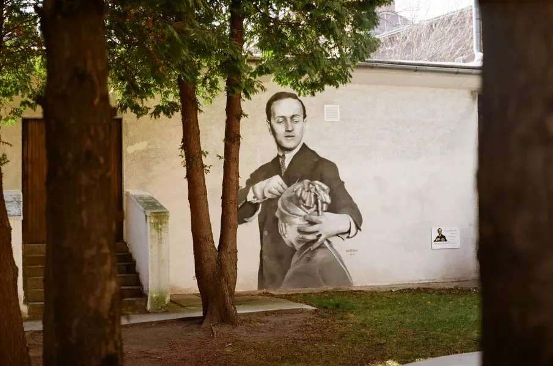
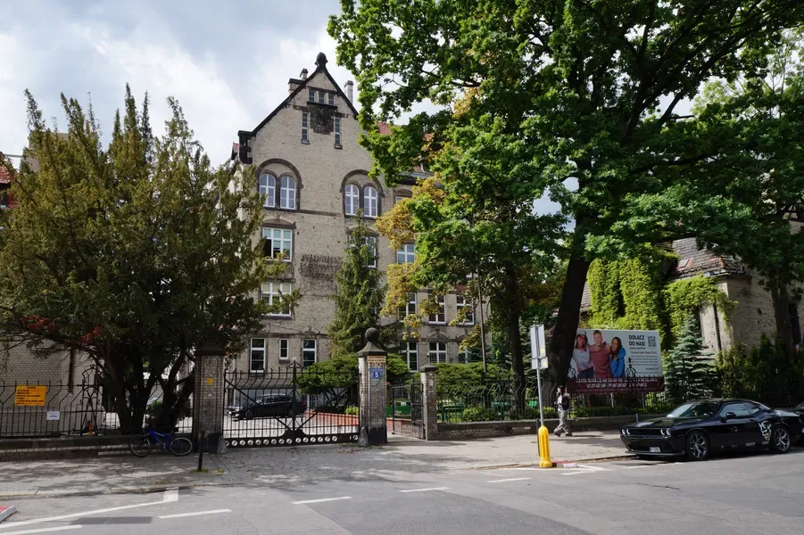

To jest ZSZ nr 5

Zespół Szkół Zawodowych nr 5 we Wrocławiu
Tu zaczyna się zawód: fryzjer
System edukacji w Polsce
Do 18. roku życia uczy się każdy. Drogi są różne.
Po szkole podstawowej uczeń wybiera liceum, technikum albo szkołę branżową. Każda z tych dróg może doprowadzić aż na studia.
Szkoła dualna bez żargonu
Szkoła dualna? Najprościej: zawodu uczysz się także w firmie.
W branżowej szkole I stopnia teoria nie wisi w powietrzu. Uczeń omawia zasady w szkole, a potem sprawdza je przy prawdziwym stanowisku pracy.

To model dla osób, które chcą szybciej poczuć odpowiedzialność: za klienta, termin, narzędzia i efekt.
Pracownie i nauczyciele
Najlepiej opowiedzieć szkołę przy stanowisku.
W gastronomii pachnie ciastem i przyprawami. We fryzjerstwie liczy się ruch dłoni. W handlu, rozmowa, produkt i odpowiedzialność za klienta.
Nasi nauczyciele nie uczą zawodu z dystansu. Są obok: pokazują, poprawiają, wymagają i zostawiają uczniowi przestrzeń, żeby zrobił to sam.
Zawody
Od nożyczek po kielnię.
Wybierz zawód i zobacz, czego się nauczysz, w jakiej szkole i jak długo to trwa.
Quiz zawodowy
Jaki zawód do Ciebie pasuje?
Cztery szybkie pytania. Nie ma złych odpowiedzi, jest tylko podpowiedź, od czego zacząć.
Wynik to podpowiedź, nie wyrok. Każdy zawód najlepiej poczuć w pracowni.
Projekty i świat poza szkołą
ZSZ nr 5 działa w rytmie miasta, firm i Europy.
Dlatego ZSZ nr 5 wychodzi poza lekcje: do pracodawców, projektów miejskich i unijnych, mobilności oraz partnerstw, które rozwijają uczniów i kadrę.
Tradycja, konkursy, charakter
Ta szkoła ma pamięć i ambicję.
Od ponad 80 lat szkoła kształci kolejne pokolenia. Jan Kiliński przypomina o godności rzemiosła, mural Antoine'a Cierplikowskiego o ambicji, a konkursy o pracy pod presją.
Gdzie jesteśmy
ul. Jana Władysława Dawida 5
Szkoła znajduje się w centrum Wrocławia, przy ul. Dawida 5, bardzo blisko Dworca Głównego. To ważny atut dla uczniów dojeżdżających z miasta i okolic.
ZSZ nr 5 najłatwiej zrozumieć przez ludzi i miejsca: nauczycieli, uczniów, pracownie, pracodawców oraz codzienną pracę przy zawodzie.
Chcesz wiedzieć więcej?
Sprawdź nasze strony i media społecznościowe.
ZSZ nr 5 Wrocław,